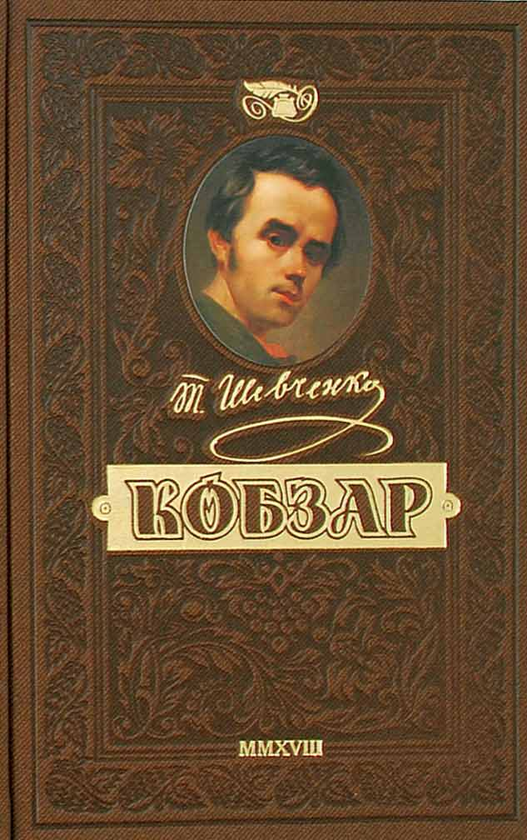
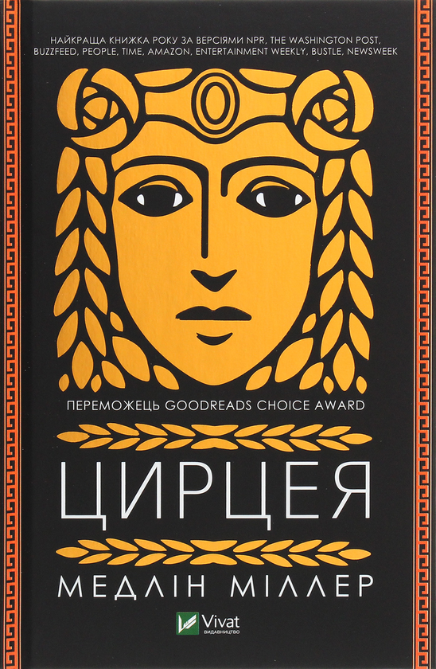

Автор: Тарас Шевченко
Рік видання: 1840
Місце видання: Київ
С.: 200

Автор: Вікторія Шваб
Рік видання: 2022
Місце видання: Харків
Переклад: Марія Пухлій
С.: 305
Автор: Меделін Маєр
Рік видання: 2023
C.: 408
